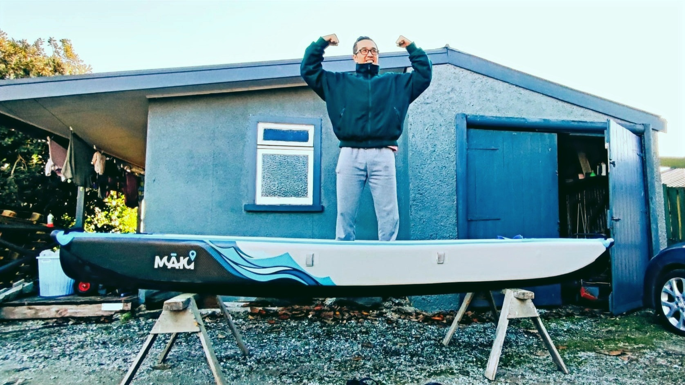

Recreational Products
Smart, sustainable solutions for everyday adventures on the water.
Inflatable kayaks using next-generation drop-stitch technology — combining portability with hardshell performance for touring, fishing and exploring New Zealand waterways.
Read More →